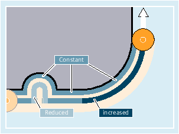

Feedrate optimization for curved path sections, CFTCP, CFC, CFIN Further information
Further information
Constant feedrate along the contour with CFC

The feedrate is reduced for inside radii and increased for outside radii. This ensures a constant velocity at the tool cutting edge and thus at the contour.